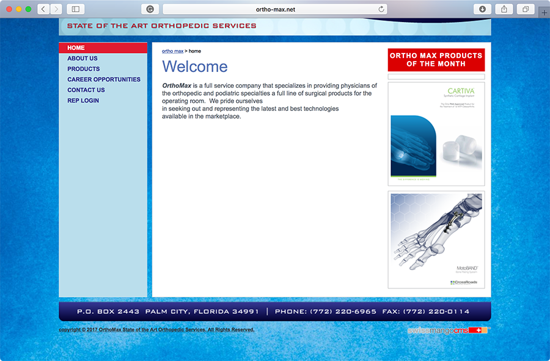
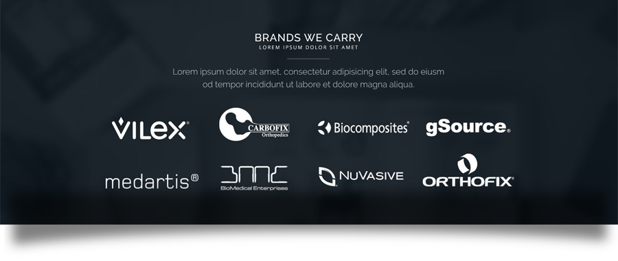
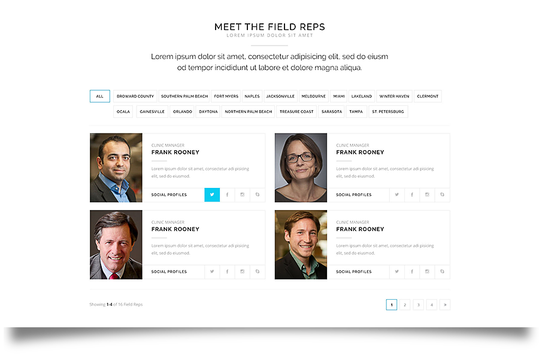
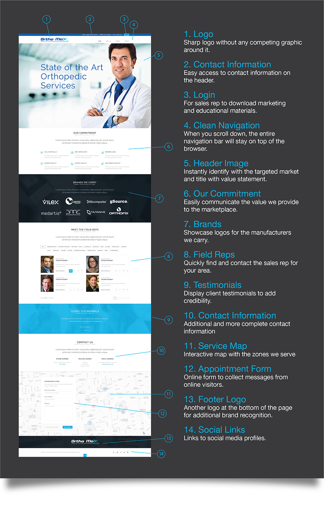

OrthoMax specializes in providing to the orthopedic and podiatric physicians with a full line of surgical products for the operating room in the areas of Palm Beach and Broward County Florida.
But their corporate website did not reflected their commitment for seeking out and representing the latest and best technologies available in the marketplace.
As you might have expected from any professional in the medical industry, time was very scarce. So I did not have the usual discovery process. We only had two telephone conversations with the owner of the company. I knew I could not waste much time having philosophical conversation about designs and aesthetics. Intend I needed to get to the core needs the design must meet in order to deliver a website with optimal experience that is aligned with business goals. I knew I had to understand their sales cycle, so I can focus the on optimizing the user experience in making it easier for them to make more sales. Because of that time constrains, I made sure I did plenty of research and had a concise list of questions ready to ask on each call.
My approached worked. I singled out the core needs.
FIRST: Their business is as good as the brands they represent and carry. Luckily for us, Ortho Max already represented some of the best-known brands for orthopedic and podiatric physicians. That is why I made sure those logos were clearly showcased on the homepage. I even did it in reverse to make sure the contrast stand out from the rest of the page.
SECOND: For doctors to buy, they must do it thru a sales rep. And reps were divided by region. Because of that, I showcased the sales team right on the homepage. To make it easier to find the sales rep for the area of the doctor, I added a filter by County. Also, each Sales Rep had the links for their respective social profiles, making it even easier to find the sales rep for the regions and the prefer method of contact.
Here is a more over view for the other design decisions to improve the user experience for the new website from Ortho-Max.
At the end the client ended up with a website capable of attracting the attention from the top veteran sales rep in the medical field. At the same time, doctors and had a real positive first impression from the company and they quickly knew if the company carried the brands they were looking for. If so, the contact for the right sales rep was right at their fingertips.